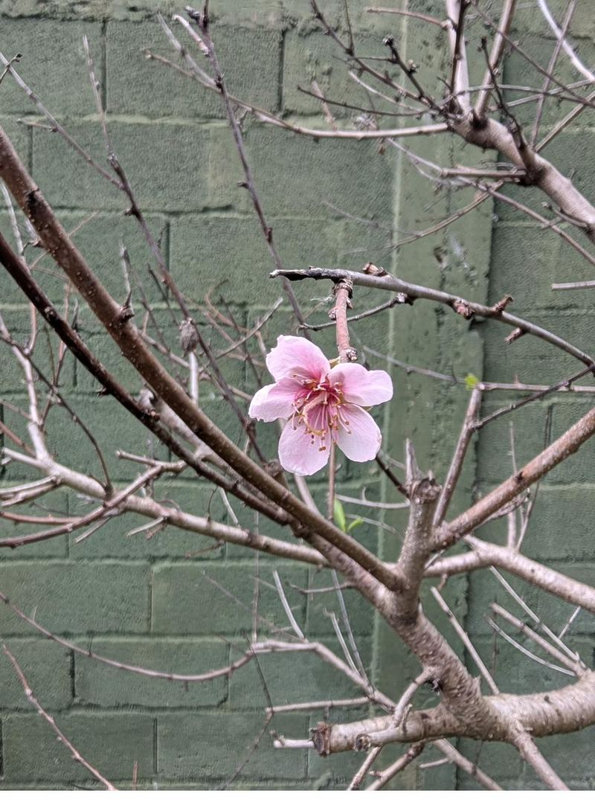

💬 Conversación con Claude
Contame cómo va, mandá una foto o preguntá lo que quieras sobre esta tarea. Proceso los mensajes cada hora (7–20 h) y te aviso la respuesta por notificación, que te trae de vuelta acá.
Cargando conversación…

Durazno (B-30, B-35)
La mano que realmente frena el torque (Taphrina deformans). Va a fines de julio, con la yema gorda y todavía cerrada. Confirmado en el jardín: el 08/09/2026 apareció torque en B-30 porque este paso no existía en la ficha.
El torque o abolladura del duraznero (Taphrina deformans) infecta UNA sola vez al año, y muy temprano: la espora invernó en la yema y en las grietas de la corteza, y entra en el brote en el momento exacto en que la yema se abre. Una vez que la hoja salió abollada, ya no hay fungicida que la vuelva atrás — el cobre aplicado en primavera sobre hoja formada no cura nada y encima quema. Por eso el tratamiento es de calendario, no de síntoma: se aplica cobre con la yema hinchada y todavía cerrada (fines de julio en Montevideo), justo antes del punto de entrada. La mano de otoño (nº1) baja el inóculo que queda en el suelo y la corteza; esta segunda mano es la que tapa la puerta. Perderse la nº2 es exactamente lo que pasó en 2026: la limpieza de otoño se hizo el 02/05 y aun así en septiembre el brote nuevo salió engrosado, ondulado y rojizo. Vale para los dos ejemplares (B-30 y B-35) aunque sólo uno muestre síntoma: la espora está en los dos.
Contame cómo va, mandá una foto o preguntá lo que quieras sobre esta tarea. Proceso los mensajes cada hora (7–20 h) y te aviso la respuesta por notificación, que te trae de vuelta acá.
Cargando conversación…